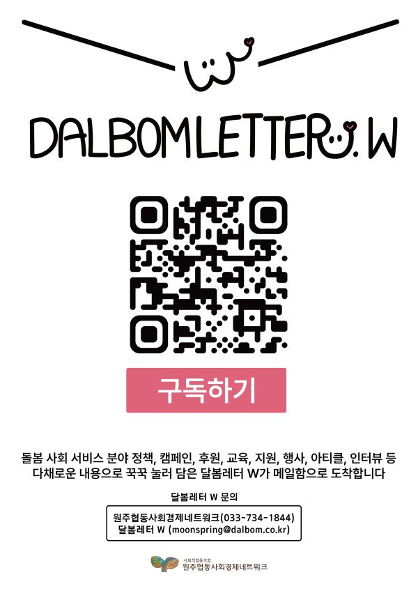

안녕하세요! 네트워크 지역사회통합돌봄분과에서 원주권 사회서비스분야 이메일 레터 서비스를 준비하고 있어요.
예비사회적기업 (주)달봄, 통합돌봄분과, 강원지속가능경제지원센터가 함께 추진하고 있는데요.
첫 시도인 만큼 올해 10월, 11월, 12월까지 총 3번의 레터 발행을 계획하고 있는데요.
원주 사회서비스분야의 지속적 발전을 위해 네트워크 조합원 분들의 많은 관심과 구독 부탁드려요~!!
원주권 사회서비스분야 정책, 사업소개, 후원, 캠페인, 행사안내, 지원사업, 기사 등 다양한 소식을 싣으려고 해요.
기업마다 홍보할 내용이 있다면 미리 소식 전해주세요!
-
소식 공유는
- moonspring@dalbom.co.kr
- moonspring2020@naver.com